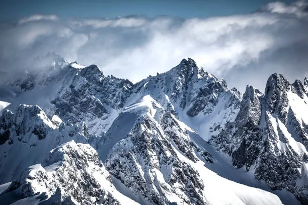
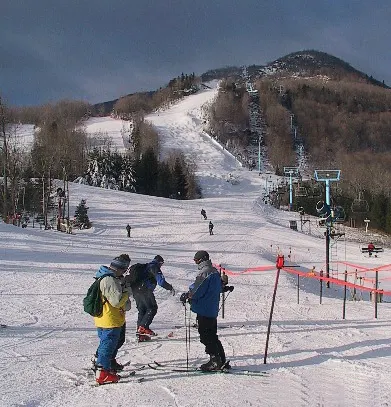
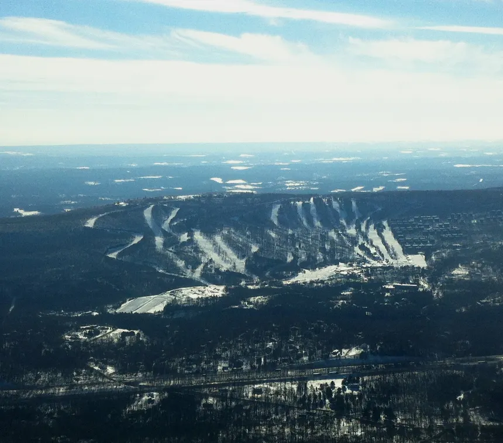
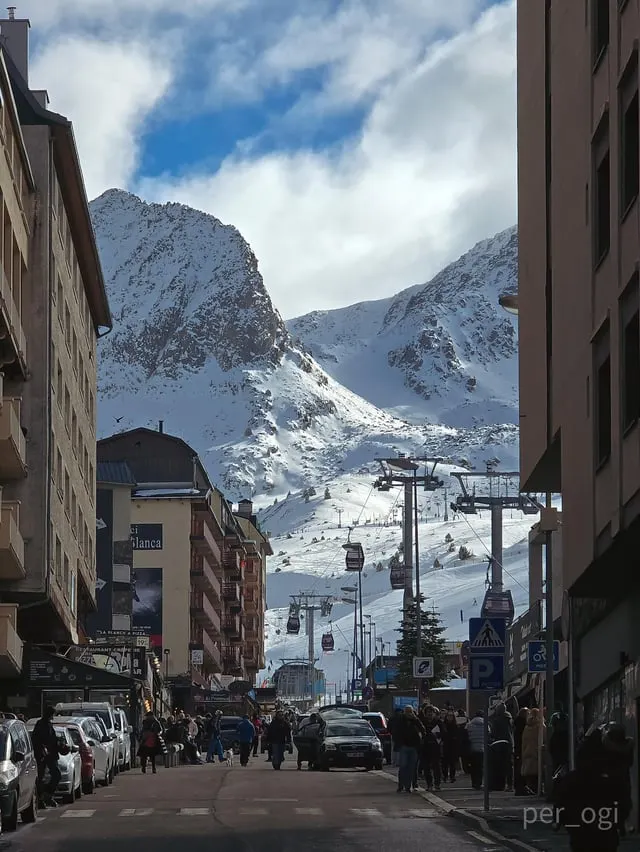
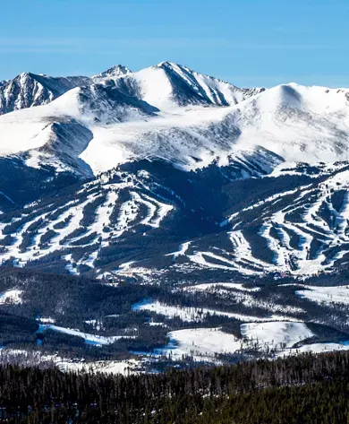
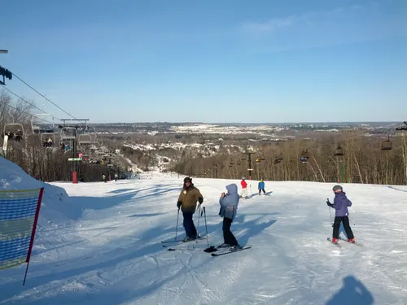
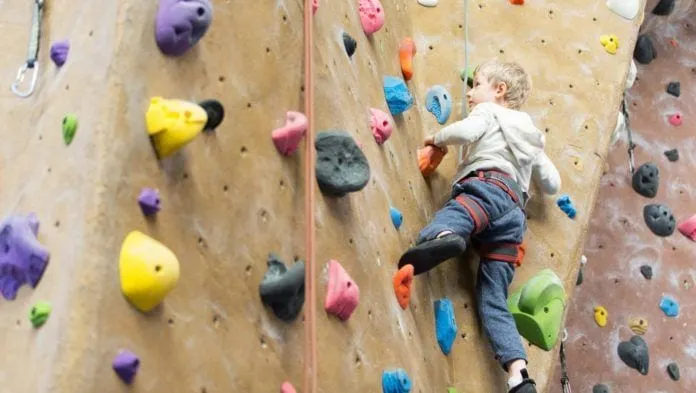
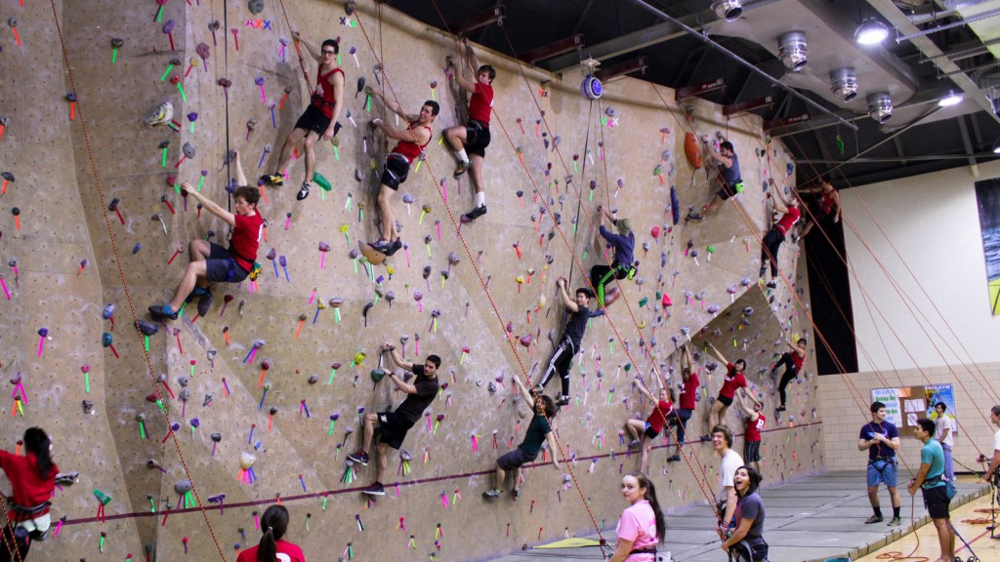
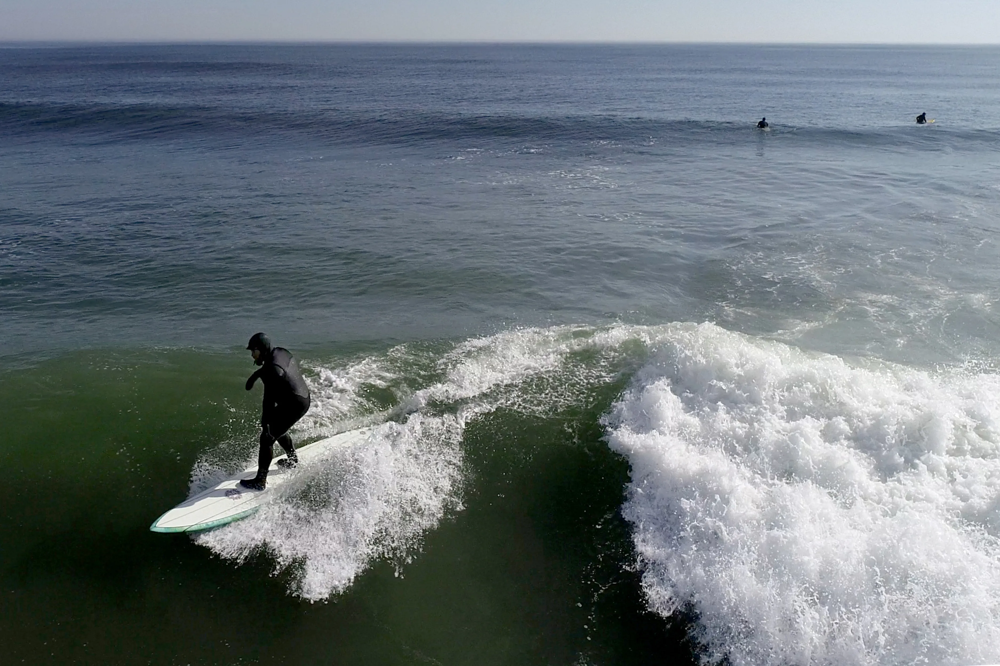
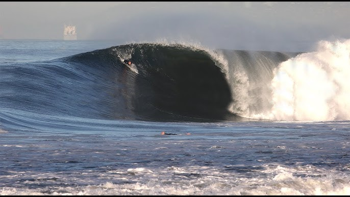

Snowboarding in the Alps
Image credit: gettyimages.com
The world's most famous mountain chain with powder runs and backcountry.
One of the best in the World!
Hunter Mountain
Image credit: wikipedia
New York's famous snowboarding resort and a top beginner mountain in the New England area.
6/10 conditions with 8/10 slopes, overall 7/10
Camelback Mountain
Image credit: wikipedia
East coast favorite in the Poconos with lots of beginner-to-intermediate friendly slopes.
3/10 conditions with 7/10 slopes, overall 5/10
Grandvalira, Andorra
Image credit: Reddit
The largest ski area in the Pyrenees, known for scenic rides and high-quality snowboarding terrain at a fair price.
10/10 conditions with 10/10 slopes
Breckenridge, CO
Image credit: breckenridge.com
World-renowned resort in the Rockies with the best powder in the U.S. of A.
10/10 conditions with 9/10 slopes, overall 10/10
Granite Peak, WI
Image credit: wikipedia
Wisconsin’s most famous snowboard destination.
8/10 conditions with 9/10 slopes, overall 8/10
Garden State Rock, NJ
Image credit: bestofnj.com
Premier indoor climbing gym in NJ with bouldering, top-rope, and lead routes for all levels.
9/10 community with 8/10 climbs, overall 8/10
Rutgers Rock Wall – College Ave
Image credit: Rutgers
Campus wall for Rutgers NB students, great for beginners and casual climbing sessions.
10/10 community with 7/10 climbs, overall 8/10
Asbury Park, NJ
Image credit: Asbury Park Press
Classic Jersey Shore surf town with a lively beach break and summer scene.
10/10 beach but 5/10 waves, overall 7/10
Huntington Beach, CA
Image credit: Youtube - Brad Jacobson
Known as “Surf City USA,” a world class surfing destination with year round swells.
10/10 beach with 10/10 waves